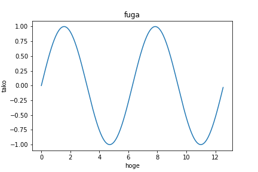
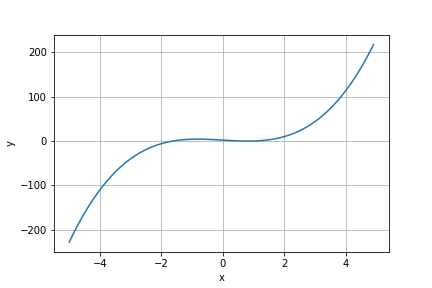
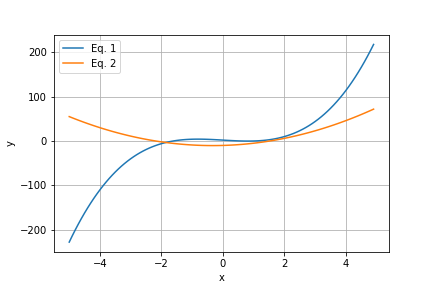
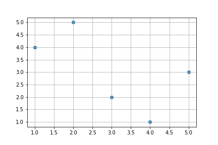
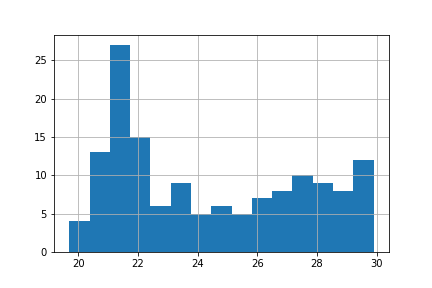

matplotlibの基本問題
Contents
2. matplotlibの基本問題#
matplotlibはPythonで使えるグラフ作成用のライブラリです。折れ線グラフや、散布図や棒グラフなど、様々なグラフを作成できます。このライブラリを利用するには、まずmatplotlilbをimportする必要があります。また、jupyter notebookやColaboratoryでは%matplotlib inineと書くことでグラフをノートブック上に描画します。
記述例
import numpy as np # numpyを取り込み、npという名前で使う、という命令
import matplotlib.pyplot as plt # matplotlibを取り込む
%matplotlib inline
# 直上の行にはコメントは書けません
x = np.arange(0, 4 * np.pi, np.pi / 100) # 等差数列を作成。型はndarray型。
y = np.sin(x) # 配列xの要素に対応した値を求め、配列yに格納（ブロードキャストの利用）
plt.rcParams["figure.figsize"] = (3, 2) # グラフの大きさを決める
plt.rcParams["font.size"] = 8 # 文字の大きさを決める
plt.plot(x, y) # 折れ線グラフの描画を指示
plt.show() # グラフの表示を指示（グラフの設定が終わった後に呼び出す）
ここで、plot関数は、第1引数を横軸とし、第2引数を縦軸にとります。これはplt.plot(y, x)として実行すると軸が逆転した図が描画されることで確認できます。
オプション
いくつかグラフ描画用のオプション機能がある。
plt.grid(True) # グラフにグリッドを描画する
plt.xlim([a, b]) # x軸をa～bの範囲に限定する
plt.ylim([a, b]) # y軸をa～bの範囲に限定する
plt.legend() # 凡例を表示する
plt.title(“hoge”) # タイトルを付ける
plt.xlabel(“x axis”) # 横軸に名前を付ける
plt.ylabel(“y axis”) # 縦軸に名前を付ける
他の命令の例
散布図と棒グラフの描画命令は以下の通り。
plt.scatter(x, y) # xとyの組で散布図を描く
plt.bar(x, y) # xの位置にyの高さで棒を描く
plt.hist(x) # ヒストグラムを作成する。階級の数（分割数、ビン数）は引数binsで指定する。
注意
matplotlibの使い方にはplt.～と書く方法と、描画オブジェクトに対して命令を追加していく方法があるが、ここでは基本的に前者を紹介する。
matplotlibは描画フィールドを作って作図するとより細かい制御ができるが、この問題集では扱わない。
軸名などに日本語を使うのは少し工夫が必要である。Colaboratoryではこちらのブログが参考になる。
2.1. 問題 折れ線グラフの作成#
以下のxとyの組み合わせを使用して、折れ線グラフを作成せよ。ただし、グリッドを表示すること。
x = [1,2,3,4,5]
y = [4,5,2,1,3]
■解答例の表示（Click）
解答例を以下に示す。
import matplotlib.pyplot as plt # matplotlibを取り込む
%matplotlib inline
x = [1,2,3,4,5]
y = [4,5,2,1,3]
plt.plot(x, y) # 折れ線グラフの描画を指示
plt.grid(True) # グリッドを表示
plt.show() # グラフの表示を指示（グラフの設定が終わった後に呼び出す）

2.2. 問題 関数のグラフ描画#
\( -5 < x < 5 \)の範囲において、\( y = 2x^3 - 4x + 2 \)を滑らかに描画せよ。グリッドと軸名は表示すること。
■解答例の表示（Click）
解答例を以下に示す。
import numpy as np # numpyを取り込み、npという名前で使う、という命令
import matplotlib.pyplot as plt # matplotlibを取り込む
%matplotlib inline
def f(x):
return 2 * x**3 - 4*x + 2
a = np.arange(-5, 5, 0.1) # 横軸の値を作る。変数名は何でもいい。
b = f(a) # 縦軸の値を作る。変数名は何でもいい。
plt.plot(a, b) # 折れ線グラフの描画を指示
plt.grid(True) # グリッドを表示
plt.xlabel("x") # 横軸に軸名を付ける
plt.ylabel("y")
plt.show() # グラフの表示を指示（グラフの設定が終わった後に呼び出す）

2.3. 問題 1つの図に2つのグラフを描画#
1つの描画領域に2つのグラフを描画できると、数式の違いがわかりやすい。\( -5 < x < 5 \)の範囲において、以下の2式を滑らかに描画せよ。グリッドと軸名を表示し、凡例に式番号を表示すること。
Note
【ヒント】同じ図の中に2つ以上の折れ線グラフを描画するには、showを呼び出す前に必要なだけplotを呼び出せばよい。
■解答例の表示（Click）
import numpy as np # numpyを取り込み、npという名前で使う、という命令
import matplotlib.pyplot as plt # matplotlibを取り込む
%matplotlib inline
def f(x):
return 2 * x**3 - 4*x + 2
def g(x):
return 3 * x**2 + 2*x - 10
a = np.arange(-5, 5, 0.1) # 横軸の値を作る。変数名は何でもいい。
b = f(a) # 縦軸の値を作る。変数名は何でもいい。
c = g(a) # 縦軸の値を作る。変数名は何でもいい。
plt.plot(a, b, label="Eq. 1") # 折れ線グラフの描画を指示。引数labelに文字列を入れると、名前が付く。
plt.plot(a, c, label="Eq. 2") # 同上
plt.grid(True) # グリッドを表示
plt.xlabel("x") # 横軸に軸名を付ける
plt.ylabel("y")
plt.legend() # 凡例を表示
plt.show() # グラフの表示を指示（グラフの設定が終わった後に呼び出す）

2.4. 問題 散布図の作成#
以下のxとyの組み合わせを使用して、散布図を作成せよ。ただし、グリッドを表示すること。
x = [1,2,3,4,5]
y = [4,5,2,1,3]
■解答例の表示（Click）
散布図を描くには、関数scatterを使う。 解答例を以下に示す。
import matplotlib.pyplot as plt # matplotlibを取り込む
%matplotlib inline
x = [1,2,3,4,5]
y = [4,5,2,1,3]
plt.scatter(x, y) # 折れ線グラフの描画を指示
plt.grid(True) # グリッドを表示
plt.show() # グラフの表示を指示（グラフの設定が終わった後に呼び出す）

2.5. 問題 ヒストグラムの作成#
以下のxを使用して、ヒストグラムを作成せよ。ただし、ビン数を15とし、グリッドを表示すること。
＊気象庁HPよりアメダスの気温データより引用 link
x = [22.4,22.2,22.1,22.2,22.5,22.2,22,22,21.9,21.8,21.9,21.8,21.6,21.6,21.5,21.4,21.4,21.4,21.3,21.2,21.1,21.3,21.3,21,20.9,20.8,21,20.9,20.9,21.1,21.1,21.1,21.2,21.6,21.6,21.1,21.2,20.9,21,20.9,21,21.2,21.6,22.7,23.3,23.7,24.1,24.1,24.2,24.9,25.2,25.3,24.9,24.8,25.3,26.4,26.5,26.1,26.1,26.2,26.6,27.1,26.8,26.8,27.4,28,27.8,28.2,27.5,27.1,27.3,27.9,27.8,27.4,27.4,28.2,27.9,28.7,29.2,29.5,29.1,29,29.6,29.4,29.5,29.9,29.8,29.4,29.6,29.7,29.4,29.7,29.6,29.2,28.9,29,28.9,28.5,28.5,28,27.9,27.7,27.4,27.2,26.9,26.5,26.2,26,25.9,25.2,25.3,24.8,24.9,24.5,24.1,23.8,23.7,23.7,23.3,23.4,23.6,23.5,23.1,22.6,22.5,22.7,22.2,22.4,22.5,22,21.8,21.7,21.6,21.5,21.6,21.1,21.1,20.9,20.6,20.6,20.3,20.2,19.7,19.8]
■解答例の表示（Click）
ヒストグラムを描くには、関数histを使う。 解答例を以下に示す。
import matplotlib.pyplot as plt # matplotlibを取り込む
%matplotlib inline
x = [22.4,22.2,22.1,22.2,22.5,22.2,22,22,21.9,21.8,21.9,21.8,21.6,21.6,21.5,21.4,21.4,21.4,21.3,21.2,21.1,21.3,21.3,21,20.9,20.8,21,20.9,20.9,21.1,21.1,21.1,21.2,21.6,21.6,21.1,21.2,20.9,21,20.9,21,21.2,21.6,22.7,23.3,23.7,24.1,24.1,24.2,24.9,25.2,25.3,24.9,24.8,25.3,26.4,26.5,26.1,26.1,26.2,26.6,27.1,26.8,26.8,27.4,28,27.8,28.2,27.5,27.1,27.3,27.9,27.8,27.4,27.4,28.2,27.9,28.7,29.2,29.5,29.1,29,29.6,29.4,29.5,29.9,29.8,29.4,29.6,29.7,29.4,29.7,29.6,29.2,28.9,29,28.9,28.5,28.5,28,27.9,27.7,27.4,27.2,26.9,26.5,26.2,26,25.9,25.2,25.3,24.8,24.9,24.5,24.1,23.8,23.7,23.7,23.3,23.4,23.6,23.5,23.1,22.6,22.5,22.7,22.2,22.4,22.5,22,21.8,21.7,21.6,21.5,21.6,21.1,21.1,20.9,20.6,20.6,20.3,20.2,19.7,19.8]
plt.hist(x, bins=15) # ヒストグラムの描画を指示
plt.grid(True) # グリッドを表示
plt.show() # グラフの表示を指示（グラフの設定が終わった後に呼び出す）

以下は問題作成用のコード
無視してください。
import numpy as np # numpyを取り込み、npという名前で使う、という命令
import matplotlib.pyplot as plt
%matplotlib inline
x = np.arange(0, 4 * np.pi, np.pi / 100)
y = np.sin(x)
plt.plot(x, y) # 折れ線グラフの描画を指示
plt.xlabel("hoge")
plt.ylabel("tako")
plt.title("fuga")
plt.savefig("fig_matplotlib_1.png")
plt.show() # グラフの表示を指示（グラフの設定が終わった後に呼び出す）